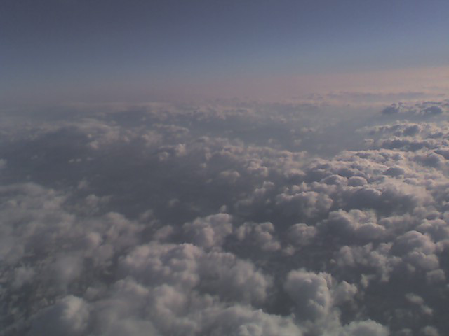

 com | net | org
Copyright © 2007-2020 Sean M. Wooten. All rights reserved. lowrock.net is an unregistered trademark of Sean M. Wooten. Hosted by GitHub Pages and powered by Jekyll. Valid XHTML 1.0 Strict and CSS3.